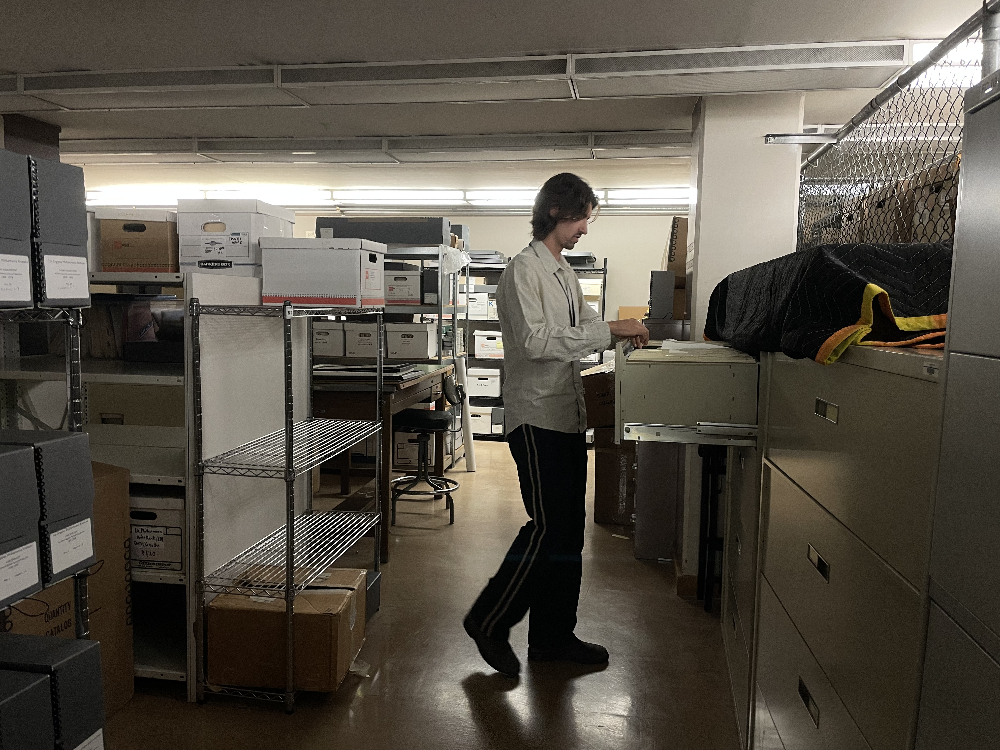

A/V Project Archivist
Los Angeles Philharmonic
As a consultant working with Paroo Digital, I led and directed a physical move of the LA Philharmonic Archive’s A/V collections to a cold storage facility for long-term preservation. I organized and oversaw several digitization projects at varying scales, surveyed and assessed vendors, and conducted assessments for future preservation and digitization priority. In addition to managing the logistical and intellectual arrangement of the A/V collections, I have made comprehensive reports and recommendations for future project development.
Project Archivist
Service Employees International Union Local 99
In preparation for the SEIU Local 99’s 75th Anniversary, I assisted in cohering and organizing the organization’s legacy media into an archival collection. As the first archival intervention for the Local 99, I created an inventory, conducted basic cataloging and documentation, and assessed their legacy media collections for future preservation and growth. I conducted archival reference and research assistance, as well as collected archival media in preparation for a 75th Anniversary exhibit.
Project Cataloger
A&E Network
As a consultant working with Paroo Digital, I assisted in organizing, documenting, and validating digital assets following the implementation of a DAM system migration across several legacy repositories. I created workflow documentation for cataloging procedures and troubleshot active issues with the migration.
Archival Assistant
Los Angeles Master Chorale
Working with a Lead Archivist, I assisted in re-housing and cataloging the LAMC’s collection, in preparation for future appraisal / donation, and in the service of increasing institutional knowledge / access. I focused on re-housing, cataloging, and indexing photographic and audiovisual materials. In addition to organizing collection data and assisting in the creation of a working finding aid, I prepared an intital survey of materials for future digitization.
Archival Intern
Visual Communications
As a fellow of the UCLA/Mellon Community Archives Internship Program, I worked to expand Visual Communication’s digital collections and descriptive practices. I developed workflows for digitization and metadata management, while training and supervising archival interns on applying these practices. I organized and conducted a community tagging program that was facilitated in person and remotely over Zoom, and created documentation for the program’s continuation through remote access.
University Archives Processing Scholar
UCLA Special Collections
As the University Archives Processing Scholar, I processed, re-arranged, and re-described departmental records for access via the Online Archive of California. Through this process, I merged record series and deaccession extraneous files, and cohered legacy data to new models that are interoperable with Archivesspace. I also conducted research on UCLA departmental histories and produced finding aids for publication on OAC.